건설재료시험기사 (2019-03-03 기출문제)
1과목: 콘크리트공학
1. 프리플레이스트 콘크리트에 사용하는 골재에 대한 설명으로 틀린 것은?
- 잔골재의 조립률은 2.3~3.1 범위로 한다.
- 굵은 골재의 최소 치수는 15mm 이상이어야 한다.
- 굵은 골재의 최대 치수와 최소 치수와의 차이를 작게하면 굵은 골재의 실적률이 작아지고 주입모르타르의 소요량이 많아진다.
- 굵은 골재의 최소 치수가 클수록 주입 모르타르의 주입성이 개선된다.
(정답률: 61%)

2. 압축강도의 기록이 없는 현장에서 콘크리트 설계기준압축강도가 28MPa인 경우 배합강도는?
- 30.5 MPa
- 35 MPa
- 36.5 MPa
- 38 MPa
(정답률: 74%)
3. 고압증기양생에 대한 설명으로 틀린 것은?
- 고압증기양생을 실시하면 황산염에 대한 저항성이 향상된다.
- 고압증기양생을 실시하면 보통 양생한 콘크리트에 비해 철근의 부착강도가 크게 향상된다.
- 고압증기양생을 실시하면 백태현상을 감소시킨다.
- 고압증기양생을 실시한 콘크리트는 어느 정도의 취성이 있다.
(정답률: 82%)
4. 유동화 콘크리트에 대한 설명으로 틀린 것은?
- 유동화 콘크리트의 슬럼프 증가량은 50mm 이하를 원칙으로 한다.
- 유동화 콘크리트를 제조할 때 유동화제를 첨가하기 전의 기본 배합의 콘크리트를 베이스 콘크리트라고 한다.
- 베이스 콘크리트 및 유동화 콘크리트의 슬럼프 및 공기량 시험은 50m3마다 1회씩 실시하는 것을 표준으로 한다.
- 유동화제는 원액으로 사용하고, 미리 정한 소정의 양을 한꺼번에 첨가하여야 한다.
(정답률: 60%)
5. 아래 표와 같은 조건에서 콘크리트의 배합강도를 결정하면?
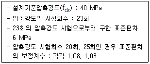
- 48.5 MPa
- 49.6 MPa
- 50.7 MPa
- 51.2 MPa
(정답률: 61%)
6. AE콘크리트에서 공기량에 영향을 미치는 요인들에 대한 설명으로 잘못된 것은?
- 단위시멘트량이 증가할수록 공기량은 감소한다.
- 배합과 재료가 일정하면 슬럼프가 작을수록 공기량은 증가한다.
- 콘크리트의 온도가 낮을수록 공기량은 증가한다.
- 콘크리트가 응결·경화되면 공기량은 증가한다.
(정답률: 42%)
7. 현장의 골재에 대한 체분석 결과 잔골재 속에서 5mm체에 남는 것이 6% 굵은 골재 속에서 5mm체를 통과하는 것이 11%였다. 시방배합표상의 단위 잔골재량은 632 kg/m3 이며, 단위굵은골재량은 1176 kg/m3 이다. 현장배합을 위한 단위잔골재량은 얼마인가?
- 522 kg/m3
- 537 kg/m3
- 612 kg/m3
- 648 kg/m3
(정답률: 59%)
8. 외기온도가 25℃를 넘을 때 콘크리트의 비비기로부터 타설이 끝날 때까지 최대 얼마의 시간을 넘어서는 안 되는가?
- 0.5시간
- 1시간
- 1.5시간
- 2시간
(정답률: 77%)
9. 콘크리트 다지기에 대한 설명 중 옳지 않은 것은?
- 콘크리트 다지기에는 내부진동기 사용을 원칙으로 한다.
- 내부진동기는 콘크리트로부터 천천히 빼내어 구멍이 남지 않도록 해야 한다.
- 내부진동기는 연직방향으로 일정한 간격을 유지하며 찔러 넣는다.
- 콘크리트가 한 쪽에 치우쳐 있을 때는 내부진동기로 평평하게 이동시켜야 한다.
(정답률: 83%)
10. 서중 콘크리트에 대한 설명으로 틀린 것은?
- 콘크리트 재료의 온도를 낮추어서 사용한다.
- 콘크리트를 타설할 때의 콘크리트 온도는 35℃ 이하이어야 한다.
- 하루의 평균기온이 25℃ 를 초과하는 것이 예상되는 경우 서중 콘크리트로 시공하여야 한다.
- 콘크리트는 비빈 후 1.5시간 이내에 타설하여야 하며, 지연형 감수제를 사용한 경우라도 2시간 이내에 타설하는 것을 원칙으로 한다.
(정답률: 81%)
11. 콘크리트 강도시험용 공시체의 제작에 대한 설명으로 틀린 것은?
- 압축강도 시험을 위한 공시체의 지름은 굵은 골재의 최대 치수의 3배이상, 100mm 이상으로 한다.
- 휨강도 시험용 공시체는 단면이 정사각형인 각주로 하고, 그 한 변의 길이는 굵은골재의 최대 치수의 3배 이상이며 150mm 이상으로 한다.
- 몰드를 떼는 시기는 콘크리트가 채우기가 끝나고 나서 16시간 이상 3일 이내로 한다.
- 공시체의 양생 온도는 (20±2)℃ 로 한다.
(정답률: 53%)
12. 프리스트레스트 콘크리트에서 프리텐션 방식으로 프리스트레싱할 때 콘크리트의 압축강도는 최소 얼마 이상이어야 하는가?
- 30 MPa
- 35 MPa
- 40 MPa
- 45 MPa
(정답률: 72%)
13. 콘크리트 제작 시 재료의 계량에 대한 설명으로 틀린 것은?
- 각 재료는 1배치씩 질량으로 계량하여야 한다.
- 혼화제의 계량허용오차는 ±2% 이다.
- 계량은 현장 배합에 의해 실시하는 것으로 한다.
- 골재의 계량허용오차는 ±3% 이다.
(정답률: 79%)
14. 시멘트의 수화반응에 의해 생성된 수산화 칼슘이 대기 중의 이산화탄소와 반응하여 콘크리트의 성능을 저하시키는 현상을 무엇이라고 하는가?
- 염해
- 동결융해
- 탄산화
- 알칼리-골재반응
(정답률: 79%)
15. 프리스트레스트 콘크리트 구조물이 철근콘크리트 구조물보다 유리한 점을 설명한 것 중 옳지 않은 것은?
- 사용 하중하에서는 균열이 발생하지 않도록 설계되기 때문에 내구성 및 수밀성이 우수하다.
- 부재의 탄력성과 복원력이 강하다.
- 부재의 중량을 줄일 수 있어 장대교량에 유리하다.
- 강성이 크기 때문에 변형이 작고, 고온에 대한 저항력이 우수하다.
(정답률: 68%)
16. 굳지 않은 콘크리트 중의 전 염소이온량은 원칙적으로 몇 kg/m3 이하로 하는 것을 표준으로 하는가?
- 0.20 kg/m3
- 0.30 kg/m3
- 0.50 kg/m3
- 0.70 kg/m3
(정답률: 82%)
17. 지름 150mm, 길이 300mm인 원주형 콘크리트 공시체로 쪼갬 인장 강도 시험을 실시한 결과 공시체가 파괴될 때까지의 최대 하중이 198kN 이었다면, 이 공시체의 쪼갬 인장 강도는?
- 2.5 MPa
- 2.8 MPa
- 3.1 MPa
- 3.4 MPa
(정답률: 64%)
18. 초음파 탐상에 의한 콘크리트 비파괴 시험의 적용 가능한 분야로서 거리가 먼 것은?
- 콘크리트 두께 탐상
- 콘크리트의 균열 깊이
- 콘크리트 내부의 공극 탐상
- 콘크리트 내의 철근 부식 정도 조사
(정답률: 72%)
19. 아래의 표에서 설명하는 콘크리트의 성질은?
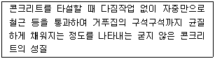
- 자기 충전성
- 유동성
- 슬럼프 플로
- 퍼니셔빌리티
(정답률: 59%)
20. 숏크리트의 시공에 대한 일반적인 설명으로 틀린 것은?
- 건식 숏크리트는 배치 후 45분 이내에 뿜어붙이기를 실시하여야 한다.
- 습식 숏크리트는 배치 후 60분 이내에 뿜어붙이기를 실시하여야 한다.
- 숏크리트는 타설되는 장소의 대기 온도가 25℃ 이상이 되면 건식 및 습식 숏크리트 모두 뿜어붙이기를 할 수 없다.
- 숏크리트는 대기 온도가 10℃ 이상일 때 뿜어붙이기를 실시한다.
(정답률: 70%)
2과목: 건설시공 및 관리
21. 교량 가설 공법인 디비닥(Dywidag) 공법의 특징으로 옳은 것은?
- 동바리가 필요하다.
- 시공 블록이 3~4m 마다 생기므로 관리가 어렵다.
- 동일 작업이 반복되지만 시공속도는 느리다.
- 긴 경간의 PC교 가설이 가능하다.
(정답률: 53%)
22. 말뚝의 지지력을 결정하기 위한 방법 중에서 가장 정확한 것은?
- 정역학적 공식
- 동역학적 공식
- 말뚝의 재하시험
- 허용지지력 표로서 구하는 방법
(정답률: 79%)
23. 숏크리트 시공 시 리바운드양을 감소시키는 방법으로 옳지 않은 것은?
- 분사 부착면을 매끄럽게 한다.
- 압력을 일정하게 한다.
- 벽면과 직각으로 분사한다.
- 시멘트량을 증가시킨다.
(정답률: 76%)
24. AASHTO(1986) 설계법에 의해 아스팔트 포장의 설계 시 두께지수(SN, Structure Number) 결정에 이용되지 않는 것은?
- 각 층의 상대강도계수
- 각 층의 두께
- 각 층의 배수계수
- 각 층의 침입도지수
(정답률: 52%)
25. 흙댐을 구조상 분류할 때 중앙에 불투수성의 흙을, 양측에는 투수성 흙을 배치한 것으로 두가지 이상의 재료를 얻을 수 있는 곳에서 경제적인 댐 형식은?
- 심벽형 댐
- 균일형 댐
- 월류 댐
- Zone형 댐
(정답률: 77%)
26. 아래표와 같은 조건에서 불도저로 압토와 리핑 작업을 동시에 실시할 때 시간당 작업량은?
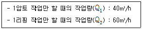
- 24 m3/h
- 37 m3/h
- 40 m3/h
- 50 m3/h
(정답률: 62%)
27. 불도저(bulldozer) 작업의 경우 다음의 조건에서 본바닥 토량으로 환산한 1시간당 토공 작업량(m3/h)은? (단, 1회 굴착 압토량은 느슨한 상태로 3.0m3, 작업효율 = 0.6, 토량변화율 L = 1.2, 평균 압토 거리 = 30m, 전진속도 = 30m/분, 후진속도 = 60m/분, 기어변속시간 = 0.5분)
- 45 m3/h
- 34 m3/h
- 20 m3/h
- 15 m3/h
(정답률: 58%)
28. 지름 400mm, 길이 10m 강관파일을 항타하여 아래 조건에서 시공하고자 한다. 소요시간은 얼마인가?
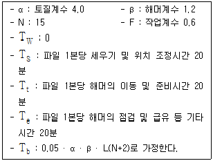
- 124분
- 136분
- 145분
- 168분
(정답률: 33%)
29. 토적곡선(Mass curve)에 관한 설명 중 틀린 것은?
- 곡선의 저점 및 정점은 각각 성토에서 절토, 절토에서 성토의 변이점이다.
- 동일 단면내의 절토량, 성토량을 토적곡선에서 구한다.
- 토적곡선을 작성하려면 먼저 토량 계산서를 작성하여야 한다.
- 절토에서 성토까지의 평균 운반거리는 절토와 성토의 중심 간의 거리로 표시된다.
(정답률: 64%)
30. 옹벽 대신 이용하는 돌쌓기 공사 중 뒤채움에 콘크리트를 이용하고 줄눈에 모르타르를 사용하는 2m이상의 돌쌓기 방법은?
- 메쌓기
- 찰쌓기
- 견치돌쌓기
- 줄쌓기
(정답률: 63%)
31. 다짐공법에서 물다짐공법에 적합한 흙은 어느 것인가?
- 점토질 흙
- 롬(loam)질 흙
- 실트질 흙
- 모래질 흙
(정답률: 56%)
32. 다음 중 깊은 기초의 종류가 아닌 것은?
- 전면 기초
- 말뚝 기초
- 피어 기초
- 케이슨 기초
(정답률: 64%)
33. Terzaghi의 기초에 대한 극한 지지력 공식에 대한 설명 중 옳지 않은 것은?
- 지지력 계수는 내부 마찰각이 커짐에 따라 작아진다.
- 직사각형 단면의 형상계수는 폭과 길이에 따라 정해진다.
- 근입 깊이가 깊어지면 지지력도 증대된다.
- 점착력이 ø≒0 인 경우 일축 압축시험에 의해서도 구할 수 있다.
(정답률: 46%)
34. 암거의 배열방식 중 여러 개의 흡수거를 1개의 간선집수거 또는 집수지거로 합류시키게 배치한 방식은?
- 차단식
- 자연식
- 빗식
- 사이판식
(정답률: 72%)
35. 아래의 주어진 조건을 이용하여 3점시간법을 적용하여 activity time을 결정하면? (조건 : 표준값 = 5시간, 낙관값 = 3시간, 비관값 = 10시간)
- 4.5시간
- 5.0시간
- 5.5시간
- 6.0시간
(정답률: 72%)
36. 자연 함수비 8%인 흙으로 성토하고자 한다. 다짐한 흙의 함수비를 15%로 관리하도록 규정하였을 때 매층마다 1m2 당 몇 kg의 물을 살수해야 하는가? (단, 1층의 다짐 후 두께는 20cm이고, 토량변화율 C는 0.9이며, 원지반 상태에서 흙의 단위중량은 1.8 t/m3)
- 7.15 kg
- 15.84 kg
- 25.93 kg
- 27.22 kg
(정답률: 50%)
37. 아스팔트 포장의 기층으로서 사용하는 가열 혼합식에 의한 아스팔트 안정처리기층을 무엇이라 하는가?
- 보조기층
- 블랙베이스
- 입도조정층
- 화이트베이스
(정답률: 63%)
38. 저항선이 1.2m일 때 12.15kg의 폭약을 사용하였다면 저항선을 0.8m로 하였을 때 얼마의 폭약이 필요한가? (단, Hauser식을 사용한다.)
- 1.8 kg
- 3.6 kg
- 5.6 kg
- 7.6 kg
(정답률: 49%)
39. 점성토에서 발생하는 히빙의 방지대책으로 틀린 것은?
- 널말뚝의 근잎 깊이를 짧게 한다.
- 표토를 제거하거나 배면의 배수 처리로 하중을 작게 한다.
- 연약 지반을 개량한다.
- 부분굴착 및 트렌치 컷 공법을 적용한다.
(정답률: 66%)
40. 품셈에서 수량의 계산 중 플래니미터의 의한 면적을 계산할 때 몇 회 이상 측정하여 평균값을 구하는가?
- 4회
- 3회
- 2회
- 1회
(정답률: 64%)
3과목: 건설재료 및 시험
41. 화성암은 산성암, 중성암, 염기성암으로 분류가 되는데, 이 때 분류 기준이 되는 것은?
- 규산의 함유량
- 운모의 함유량
- 장석의 함유량
- 각섬석의 함유량
(정답률: 74%)
42. 스트레이트 아스팔트에 대한 설명 중 틀린 것은?
- 블론 아스팔트에 비해 투수계수가 크다.
- 블론 아스팔트에 비해 신장성이 크다.
- 블론 아스팔트에 비해 점착성이 크다.
- 블론 아스팔트에 비해 온도에 대한 감온성이 크다.
(정답률: 40%)
43. 어떤 모래를 체가름 시험한 결과 다음 표를 얻었다. 이 때 모래의 조립률은?
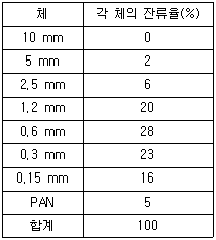
- 2.68
- 2.73
- 3.69
- 5.28
(정답률: 48%)
44. 주로 화성암에 많이 생기는 절리(joint)로 돌기둥을 배열한 것 같은 모양의 절리를 무엇이라 하는가?
- 주상절리
- 구상절리
- 불규칙 다면괴상절리
- 판상정리
(정답률: 79%)
45. 마샬시험방법에 따라 아스팔트 콘크리트 배합설계를 진행 중이다. 재료 및 공시체에 대한 측정결과가 아래와 같을 때 포화도는 약 몇 % 인가?
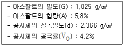
- 56.0%
- 58.8%
- 76.1%
- 77.9%
(정답률: 36%)
46. 아래의 표는 어떤 혼화재료의 종류인가?
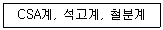
- 팽창제
- AE제
- 방수제
- 급결제
(정답률: 59%)
47. 금속재료의 일반적 성질에 관한 설명 중 틀린 것은?
- 선철은 철광석 용광로 내에서 환원하여 만들며 주로 제강용 원료가 되며 Si원소가 가장 많고, C원소가 가장 적게 포함되어 있다.
- 탄소강은 0.04~1.7%의 탄소를 함유하는 Fe-C 합금으로서 C ＜ 0.3%는 저탄소강, 0.3% ＜ C ＜ 0.6%는 중탄소강, C ＞ 0.6%는 고탄소강이라 한다.
- 금속재료의 특징은 전기 및 열의 전도율이 크고, 연성과 전성이 풍부하다.
- 금속재료는 철금속과 비철금속으로 나눌 수 있고, 광택이 있으며, 상온에서 결정형을 가진 고체로서 가공이 용이하다.
(정답률: 52%)
48. 콘크리트용 강섬유의 품질에 대한 설명으로 틀린 것은?
- 강섬유의 평균 인장강도는 700MPa 이상이 되어야 한다.
- 강섬유는 표면에 유해한 녹이 있어서는 안 된다.
- 강섬유 각각의 인장 강도는 600MPa 이상이어야 한다.
- 강섬유는 16℃ 이상의 온도에서 지름 안쪽 90°(곡선 반지름 3mm)방향으로 구부렸을 때, 부러지지 않아야 한다.
(정답률: 55%)
49. 시멘트의 분말도 시험에 관한 설명 중 옳지 않은 것은?
- 분말도 시험은 시멘트 입자의 가는 정도를 알기 위한 시험으로 분말도와 비표면적을 구한다.
- 공기 투과 장치에 의한 방법은 표준시료와 시험시료로 만든 시멘트 베드를 공기가 투과하는 데 요하는 시간을 비교하여 비표면적을 구한다.
- 표준체에 의한 방법(KS L 5112)은 표준체 45μm로 쳐서 남는 잔사량을 계량하여 분말도를 구한다.
- 분말도가 작은 시멘트일수록 물과의 접촉 표면적이 크며 수화가 빨리 진행된다.
(정답률: 63%)
50. 폭약으로 사용되는 칼릿(Carlit)에 대한 설명으로 틀린 것은?
- 칼릿은 다이너마이트보다 발화점이 높다.
- 칼릿은 다이너마이트보다 충격에 둔감하여 취급이 편하다.
- 칼릿은 폭발력이 다이너마이트보다 우수하다.
- 칼릿은 유해가스 발생이 적고 흡수성이 적어 터널공사에 적합하다.
(정답률: 66%)
51. 콘크리트 배합에 관한 아래 표의 ( )에 들어갈 알맞은 수치는?
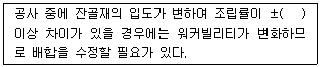
- 0.⑤
- 0.1
- 0.2
- 0.3
(정답률: 53%)
52. 다음 중 일반적인 목재의 비중은?
- 살아있는 상태의 나무비중
- 공기 건조 중의 비중
- 물에서 포화상태의 비중
- 절대건조 비중
(정답률: 61%)
53. 골재의 취급과 저장 시 주의해야 할 사항으로 틀린 것은?
- 잔골재, 굵은 골재 및 종류, 입도가 다른 골재는 각각 구분하여 별도로 저장한다.
- 골재의 저장설비는 적당한 배수설비를 설치하고 그 용량을 검토하여 표면수가 일정한 골재의 사용이 가능하도록 한다.
- 골재의 표면수는 굵은 골재는 건조 상태로, 잔골재는 습윤 상태로 저장하는 것이 좋다.
- 골재는 빙설의 혼입방지, 동결방지를 위한 적당한 시설을 갖추어 저장해야 한다.
(정답률: 75%)
54. 포틀랜드 시멘트의 클링커에 대한 설명 중 틀린 것은?
- 클링커는 단일조성의 물질이 아니라 C3S, C2S, C3A, C4AF 의 4가지 주요화합물로 구성되어 있다.
- 클링커의 화합물 중 C3S 및 C2S 는 시멘트 강도의 대부분을 지배한다.
- C3A는 수화속도가 대단히 빠르고 발열량이 크며 수축도 크다.
- 클링커의 화합물 중 C3S 가 많고 C2S가 적으면 시멘트의 강도 발현이 늦어지지만 장기재령은 향상된다.
(정답률: 56%)
55. 다음 설명 중 틀린 것은?
- 혼화재에는 플라이애시, 고로슬래그 미분말, 규산백토 등이 있다.
- 혼화제에는 AE제, 경화촉진제, 방수제 등이있다.
- 혼화재는 그 사용량이 비교적 적어서 그 자체의 부피가 콘크리트 배합의 계산에서 무시하여도 좋다.
- AE제에 의해 만들어진 공기를 연행공기라 한다.
(정답률: 66%)
56. 다음 강재의 응력-변형률 곡선에 관한 설명 중 잘못된 것은?
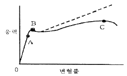
- A점은 응력과 변형률이 비례하는 최대 한도지점이다.
- B점은 외력을 제거해도 영구변형을 남기지 않고 원래로 돌아가는 응력의 최대한도 지점이다.
- C점은 부재 응력의 최댓값이다.
- 강재는 하중을 받아 변형되며 단면이 축소되므로 실제 응력-변형률 선은 점선이다.
(정답률: 62%)
57. 다음 중 일반적으로 지연제를 사용하는 경우가 아닌 것은?
- 서중 콘크리트의 시공 시
- 레미콘 운반거리가 멀 때
- 숏크리트 타설 시
- 연속 타설시 콜드 조인트를 방지하기 위해
(정답률: 74%)
58. 잔골재를 각 상태에서 계량한 결과가 아래와 같을 때 골재의 유효흡수량(%)은?
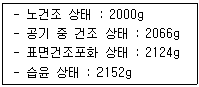
- 1.32%
- 2.73%
- 2.81%
- 7.60%
(정답률: 45%)
59. 역청재에 대한 설명 중 옳지 않은 것은?
- 석유 아스팔트는 원유를 증류한 잔유물을 원료로 한 것이다.
- 아스팔타이트의 성질 및 용도는 스트레이트 아스팔트와 같이 취급한다.
- 포장용 타르는 타르를 다시 증류하여 수분, 나프타, 경유 등을 유출해 정제한 것이다.
- 역청유제는 역청을 유화제 수용액 중에 미립자의 상태로 분포시킨 것이다.
(정답률: 51%)
60. 시멘트 모르타르의 압축강도 시험에서 공시체의 양생온도는?
- (10±2)℃
- (15±2)℃
- (23±2)℃
- (30±2)℃
(정답률: 63%)
4과목: 토질 및 기초
61. Meyerhof의 일반 지지력 공식에 포함되는 계수가 아닌 것은?
- 국부전단계수
- 근잎깊이계수
- 경사하중계수
- 형상계수
(정답률: 46%)
62. 다음의 투수계수에 대한 설명 중 옳지 않은 것은?
- 투수계수는 간극비가 클수록 크다.
- 투수계수는 흙의 입자가 클수록 크다.
- 투수계수는 물의 온도가 높을수록 크다.
- 투수계수는 물의 단위중량에 반비례한다.
(정답률: 47%)
63. 흙의 다짐시험을 실시한 결과 다음과 같았다. 이흙의 건조단위중량은 얼마인가?
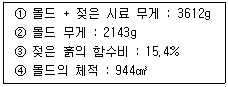
- 1.35 g/cm3
- 1.56 g/cm3
- 1.31 g/cm3
- 1.42 g/cm3
(정답률: 28%)
64. 시료가 점토인지 아닌지 알아보고자 할 때 가장 거리가 먼 사항은?
- 소성지수
- 소성도표 A선
- 포화도
- 200번체 통과량
(정답률: 49%)
65. 말뚝에서 부마찰력에 관한 설명 중 옳지 않은 것은?
- 아래쪽으로 작용하는 마찰력이다.
- 부마찰력이 작용하면 말뚝의 지지력은 증가한다.
- 압밀층을 관통하여 견고한 지반에 말뚝을 박으면 일어나기 쉽다.
- 연약지반에 말뚝을 박은 후 그 위에 성토를하면 일어나기 쉽다.
(정답률: 55%)
66. 보링(boring)에 관한 설명으로 틀린 것은?
- 보링(boring)에는 회전식(rotary boring)과 충격식(percussion boring)이 있다.
- 충격식은 굴진속도가 빠르고 비용도 싸지만 분말상의 교란된 시료만 얻어진다.
- 회전식은 시간과 공사비가 많이 들뿐만 아니라 확실한 코어(core)도 얻을 수 없다.
- 보링은 지반의 상황을 판단하기 위해 실시한다.
(정답률: 59%)
67. 다음 지반 개량공법 중 연약한 점토지반에 적당하지 않은 것은?
- 샌드 드레인 공법
- 프리로딩 공법
- 치환 공법
- 바이브로 플로테이션 공법
(정답률: 66%)
68. 흙이 동상을 일으키기 위한 조건으로 가장 거리가 먼 것은?
- 아이스 렌즈를 형성하기 위한 충분한 물의 공급이 있을 것
- 양(+)이온을 다량 함유 할 것
- 0℃ 이하의 온도가 오랫동안 지속될 것
- 동상이 일어나기 쉬운 토질일 것
(정답률: 68%)
69. 어떤 사질 기초지반의 평판재하 시험결과 항복강도가 60t/m2, 극한강도가 100t/m2 이었다. 그리고 그 기초는 지표에서 1.5m 깊이에 설치 될 것이고 그 기초 지반의 단위중량이 1.8t/m3일 때 지지력계수 Nq=5 이었다. 이 기초의 장기 허용지지력은?
- 24.7 t/m2
- 26.9 t/m2
- 30 t/m2
- 34.5 t/m2
(정답률: 25%)
70. 흙댐에서 상류면 사면의 활동에 대한 안전율이 가장 저하되는 경우는?
- 만수된 물의 수위가 갑자기 저하할 때이다.
- 흙댐에 물을 담는 도중이다.
- 흙댐이 만수되었을 때이다.
- 만수된 물이 천천히 빠져나갈 때이다.
(정답률: 62%)
71. 세립토를 비중계법으로 입도분석을 할 때 반드시 분산제를 쓴다. 다음 설명 중 옳지 않은 것은?
- 입자의 면모화를 방지하기 위하여 사용한다.
- 분산제의 종류는 소성지수에 따라 달라진다.
- 현탁액이 산성이면 알칼리성의 분산제를 쓴다.
- 시험도중 물의 변질을 방지하기 위하여 분산제를 사용한다.
(정답률: 42%)
72. 비중이 2.67 함수비가 35%이며, 두께 10m인 포화점토층이 압밀 후에 함수비가 25%로 되었다면, 이 토층 높이의 변화량은 얼마인가?
- 133cm
- 128cm
- 135cm
- 155cm
(정답률: 41%)
73. 아래 그림과 같은 모래지반에서 깊이 4m지점에서 의 전단강도는? (단, 모래의 내부마찰각 ø=30° 이며, 점착력 C=0)
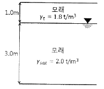
- 4.50 t/m2
- 2.77 t/m2
- 2.32 t/m2
- 1.86 t/m2
(정답률: 51%)
74. 100% 포화된 흐트러지지 않은 시료의 부피가 20.5cm3 이고 무게는 34.2g이었다. 이 시료를 오븐(Oven) 건조 시킨 후의 무게는 22.6g 이었다. 간극비는?
- 1.3
- 1.5
- 2.1
- 2.6
(정답률: 35%)
75. 연약점토지반에 성토제방을 시공하고자 한다. 성토로 인한 재하속도가 과잉간극수압이 소산되는 속도보다 빠를 경우, 지반의 강도정수를 구하는 가장 적합한 시험방법은?
- 압밀 배수시험
- 압밀 비배수시험
- 비압밀 비배수시험
- 직접전단시험
(정답률: 55%)
76. 유효응력에 관한 설명 중 옳지 않은 것은?
- 포화된 흙은 경우 전응력에서 공극수압을 뺀 값이다.
- 항상 전응력보다는 작은 값이다.
- 점토지반의 압밀에 관계되는 응력이다.
- 건조한 지반에서는 전응력과 같은 값으로 본다.
(정답률: 53%)
77. 다음 중 Rankine 토압이론의 기본가정에 속하지 않는 것은?
- 흙은 비압축성이고 균질의 입자이다.
- 지표면은 무한히 넓게 존재한다.
- 옹벽과 흙과의 마찰을 고려한다.
- 토압은 지표면에 평행하게 작용한다.
(정답률: 48%)
78. 유선망의 특징을 설명한 것 중 옳지 않은 것은?
- 각 유로의 투수량은 같다.
- 인접한 두 등수두선 사이의 수두손실은 같다.
- 유선망을 이루는 사변형은 이론상 정사각형이다.
- 동수경사는 유선망의 폭에 비례한다.
(정답률: 64%)
79. 기초가 갖추어야 할 조건이 아닌 것은?
- 동결, 세굴 등에 안전하도록 최소의 근잎깊이를 가져야 한다.
- 기초의 시공이 가능하고 침하량이 허용치를 넘지 않아야 한다.
- 상부로부터 오는 하중을 안전하게 지지하고 기초지반에 전달하여야 한다.
- 미관상 아름답고 주변에서 쉽게 구득할 수 있는 재료로 설계되어야 한다.
(정답률: 69%)
80. 흙의 강도에 대한 설명으로 틀린 것은?
- 점성토에서는 내부마찰각이 작고 사질토에서는 점착력이 작다.
- 일축압축 시험은 주로 점성토에 많이 사용한다.
- 이론상 모래의 내부마찰각은 0 이다.
- 흙의 전단응력은 내부마찰각과 점착력의 두 성분으로 이루어진다.
(정답률: 44%)
굵은 골재의 최소 치수는 15mm 이상이어야 한다. - 적절한 내용이다.
굵은 골재의 최대 치수와 최소 치수와의 차이를 작게하면 굵은 골재의 실적률이 작아지고 주입모르타르의 소요량이 많아진다. - 적절한 내용이다.
굵은 골재의 최소 치수가 클수록 주입 모르타르의 주입성이 개선된다. - 틀린 내용이다. 굵은 골재의 최소 치수가 클수록 주입 모르타르의 주입성은 나빠진다. 이는 굵은 골재와 주입 모르타르 사이의 간극이 커지기 때문이다.